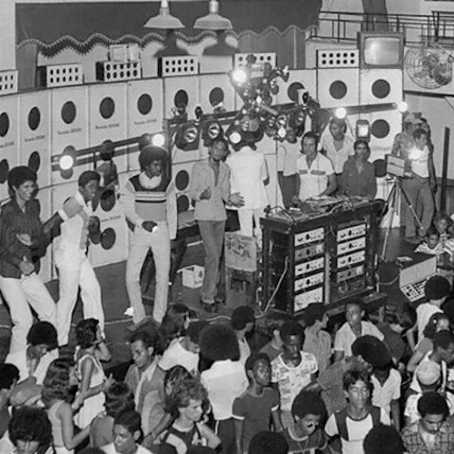

Tudo sobre a Música
A origem do Funk
O funk surge no sul dos Estados Unidos, nos anos 60,
criado por músicos negros como Horace Silver,
James Brown, George Clinton, entre outros.
Escrito em compasso quaternário, a característica marcante do funk é o primeiro
tempo acentuado, em relação aos outros três tempos.
História do Funk
Como toda criação artística fica difícil apontar apenas um único inventor para o funk.
No entanto, James Brown é um dos nomes mais importantes para o surgimento do funk.
Este gênero musical surgiu da combinação de vários ritmos negros
populares como o blues, gospel, jazz e soul, que faziam sucesso nos Estados Unidos.
A palavra “funk” ou “funky” era usada pelos músicos de jazz como uma forma de pedir aos colegas de banda
que pusessem mais “força” ao ritmo. Alguns estudiosos apontam que poderia ser a fusão
entre o vocábulo quibundo "lu-fuki" e o inglês “stinky”.
Desta maneira, os términos funk e funky foram evoluindo para descrever uma música com batida constante e melodia
que permitisse dançar.
Criadores do funk utilizaram ambas as palavras para títulos de suas composições,
como é o caso de "Opus de Funk", de Horace Silver e “Funky Drummer”, de James Brown
O Funk no Brasil
O funk chega ao Brasil nos anos 70 e conquista músicos como Tim Maia (1943 -1998) e Tony Tornado (1970).
Estes serão os responsáveis por misturar o ritmo funk americano à batida da música brasileira.
Igualmente, o radialista Big Boy (1943-1977) começou a promover os "Bailes da Pesada" no Canecão, no Rio de Janeiro,
que neste momento funcionava como churrascaria. Ali tocava-se rock, soul, groove, funk, reunindo a juventude carioca.
Quando os bailes no Canecão chegaram ao fim, Big Boy decidiu torná-los itinerantes e passou a tocar tanto na Zona Sul
como na Zona Norte da cidade.
Segundo o DJ Marlboro (1963), a partir daí, aparecem dois tipos de bailes: os de rock e os de música eletrônica,
mais ligados ao som "Miami bass", que eram conhecidos também como "baile funk".
O nome ficou, embora já não tivesse muita relação com o som original.
